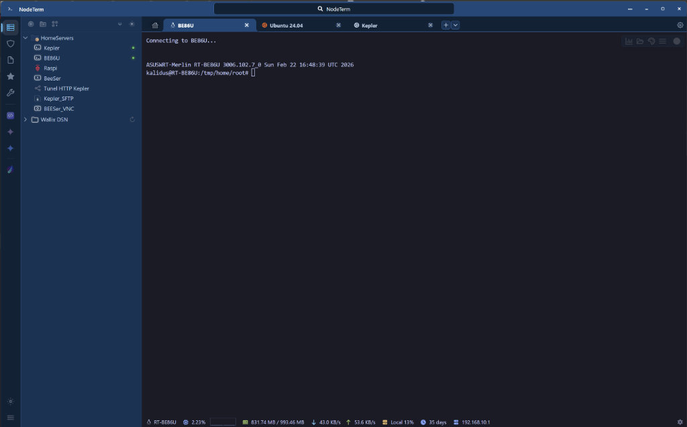

Windows
Instalador para Windows (.exe).
Descargar .exeEscritorio · Windows, Linux y macOS
Moderno y multiprotocolo, con bóveda de contraseñas e IA en un espacio multipestaña ultrarrápido.

Un solo sitio para entrar a los servidores, guardar las credenciales y dejar que un agente ayude sin ver las contraseñas.
IronRDP por defecto, VNC con noVNC, explorador SFTP y bastiones Wallix. Sesiones en carpetas y pestañas por proyecto.
Clave maestra, bloqueo automático y cifrado local de credenciales.
Cursor, Claude y otros agentes consultan conexiones, notas y terminales. Los secretos se inyectan sin mostrarse.
Divide la pantalla en horizontal y vertical con xterm.js, a 60 FPS.
Graba la sesión SSH en asciicast v2 y reprodúcela dentro de la aplicación.
Interfaz oscura o clara, fuentes con ligaduras y paquetes de iconos.
El botón abre la última release publicada en GitHub. Elige el paquete de tu sistema.
Instalador para Windows (.exe).
Descargar .exeAppImage, deb, pacman o rpm.
Imagen de disco para Apple silicon (arm64).
Descargar .dmgSi te resulta útil en el trabajo diario, puedes apoyar el mantenimiento. La descarga no depende de la donación.
0x7D18e60b2717edA94e6a48d05e6d09038dCf9342
DAP3efj9Fvp1uvf8eVse3dMTxxyw2bWLh4snA891iNZh